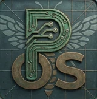
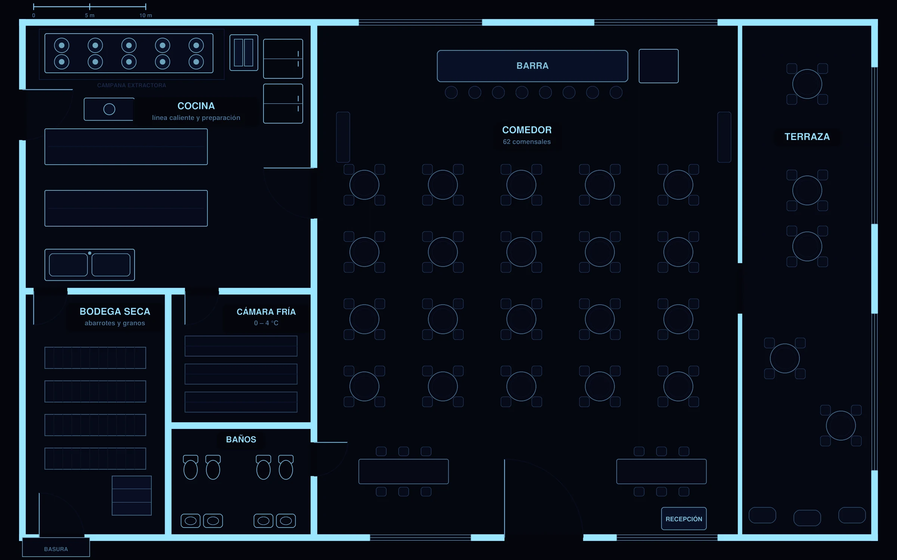

Capturas por tipo de dispositivo
11 visitas

PestOSSoftware para empresas de control de plagas
Agenda, reporte de 6 pasos desde el celular, constancia con QR verificable y un reporte ejecutivo con mapa de calor. Funciona con o sin internet.
01 · Monitoreo
Subes el plano del cliente y colocas sus estaciones: cebaderos, trampas mecánicas, de feromona y lámparas UV. El técnico las revisa una por una y todo queda registrado sobre el plano.
Restaurante con cocina, bodega, cámara fría, comedor y terraza: 20 estaciones.
02 · Análisis
Cada captura y cada consumo de cebo se suman sobre el plano real. Ves qué zona pide atención antes de entrar y, en cada visita, si la actividad está bajando.
Las zonas más cálidas: lámpara UV de la línea caliente y terraza.
03 · En campo
El técnico avanza en orden y la app valida cada paso en el servidor. Botones grandes, texto legible y pensado para trabajar con guantes.
Eliges la visita agendada o abres un servicio sin cita. Los datos del cliente ya están.
Plagas detectadas, fotos del antes y la revisión de cada estación: estado, capturas, organismos y acción.
Qué se hizo, horario, área tratada, equipo de protección y tiempo de reentrada.
Producto, lote, dosis y método. Calcula la mezcla en ml/L o g/L y descuenta el stock del técnico.
Evidencia del resultado, lista para el PDF y para el portal del cliente.
Firman el técnico y el cliente en pantalla. Se genera el PDF y la constancia con QR de verificación.
04 · Sin señal
Con red, el teléfono guarda la agenda, los insumos y los catálogos. Sin red, el técnico llena el reporte completo y queda en una cola que nunca se borra hasta que el servidor confirma. Al volver la señal se envía solo, sin duplicar nada.
Funciona en iPhone y Android, y se instala como app desde el navegador.
05 · La app
El administrador coordina, el técnico ejecuta y el cliente consulta. Pantallas reales, en el color de tu empresa.
06 · Documentos
Cada reporte sale con tu logo y tus colores. El diseño Ejecutivo agrega resumen, tendencias, mapa de calor y trazabilidad de productos. La constancia se genera sola al cerrar el servicio.
Así se ven los documentos que recibe tu cliente: restaurante «Casa Agave», 11 visitas en 5 meses.
07 · Resultados
Las gráficas salen de lo que el técnico ya capturó: sin hojas de cálculo, sin trabajo extra.
11 visitas
gramos por visita
mililitros por visita
37 detecciones en 6 meses
Lectura automática del periodo
Las capturas pasaron de 150 a 94 a lo largo de 11 visitas: se observa una disminución.
Es una lectura descriptiva de los registros; no afirma por sí sola la eficacia del tratamiento.
08 · Pruébalo
Filtra por tipo de dispositivo, mira el historial de cada punto y simula el recorrido del técnico.

09 · Planes
Servicios y constancias ilimitados en todos los planes. Siempre hay un administrador aparte.
10 · Empecemos
Escríbeme por WhatsApp. Te enseño la app funcionando y te digo qué plan te conviene.